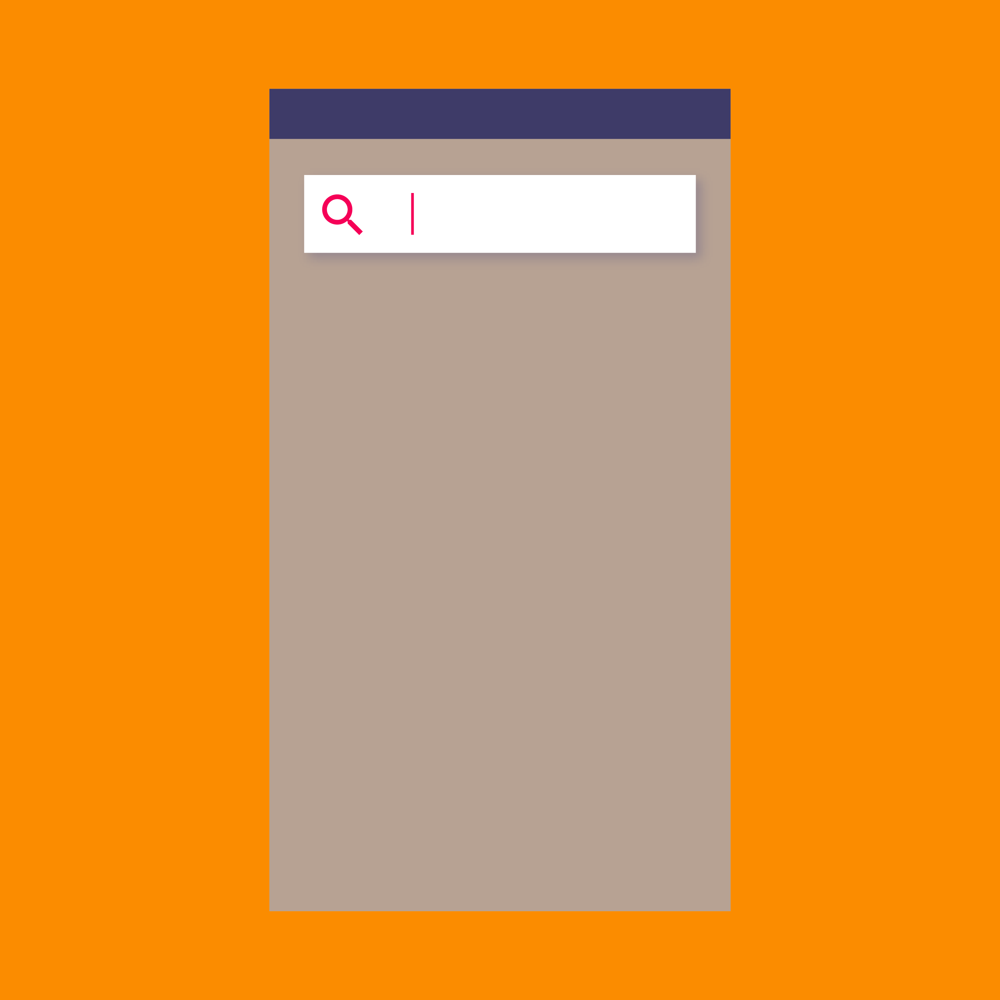

搜索可以使用户快速查找应用内容。
当应用包含大量内容时，用户应当可以通过搜索来快速查找内容。
搜索选项
语音搜索
搜索建议
自动完成
搜索类型
固定显示的搜索框
可展开的搜索框

当应用包含大量内容时，用户应当可以通过搜索来快速查找内容。
语音搜索
搜索建议
自动完成
固定显示的搜索框
可展开的搜索框
当应用包含大量内容时，用户应当可以通过搜索快速查找内容。
基本的搜索包括：
可以通过提供以下功能来提升搜索体验：
应用内搜索有两种主要模式：固定显示的搜索和可展开的搜索。
当搜索是应用的主要操作时，使用固定显示的搜索。
行为：
搜索字段嵌入在搜索框内，随时准备获得焦点。用户轻触麦克风图标可以激活语音搜索。
当获得焦点时，搜索框会展开显示历史搜索建议。如果需要的话，屏幕键盘也会出现。
选择任意一条搜索建议就会提交搜索。轻触向上箭头会将焦点从搜索框中释放，关闭搜索建议以及屏幕键盘。

固定显示的搜索框
聚焦状态的固定显示的搜索框
当用户输入搜索词时，搜索建议会切换为自动完成。随着用户的输入，搜索建议会被过滤和排序。选择一个建议或按下搜索键就会提交搜索。
搜索框中的 X 按钮可以清空关键词。
搜索框在展示搜索结果时始终可见，但是默认没有焦点。关闭了屏幕键盘来显示更多搜索结果。
搜索结果的格式为卡片，以匹配搜索框的外观，以及适应不同类型的搜索结果。
自动完成

搜索结果
当搜索不是应用的主焦点时，使用可展开的搜索框。
行为：
在工具栏中显示一个放大镜图标来替代搜索框。
轻触搜索图标会使工具栏进行转换，清空工具栏中的其他内容，并显示搜索文本框。如果支持语音搜索，麦克风图标也会出现。
搜索框会自动获得焦点，如果需要的话，屏幕键盘也会出现。历史搜索建议可以显示在工具栏下面。选择任意一条建议将提交搜索。
触摸向上箭头可以关闭搜索，工具栏也会恢复成原始样式。
可展开的搜索框
聚焦状态的搜索框
当用户输入关键词时，搜索建议会转换为自动完成。随着用户的输入，搜素建议会被筛选和排序。选择其中一条建议或按下搜索键会提交搜索。
搜索框中的 X 按钮会清空关键词。
变成了搜索框的工具栏在显示搜索结果时始终可见，但是默认没有焦点。关闭了屏幕键盘来显示更多搜索结果。
搜索结果为卡片格式，并显示在工具栏下方的页面主体中。
自动完成

搜索结果